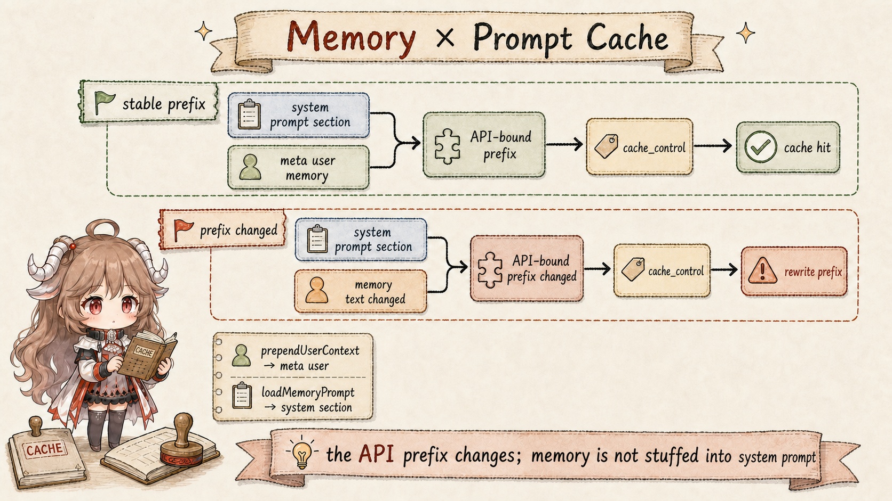

A terminal scrollback, a transcript file, and a memory file can all mention the same fact. They are still different objects. Scrollback helps the user review the session. Transcript preserves evidence. Memory is material the runtime may load again so future turns can behave differently. Some of it enters user context, some enters a memory prompt section, and some belongs only to a selected agent.
The thesis is simple: Claude Code memory is a long-lived ledger plus per-turn projection. It can affect prompt caching because projected memory becomes part of the API-bound request prefix. But "dynamic" does not mean "changed every turn," and the visible source does not append this material to the system prompt.
Reading contract: follow one representative rule, "this project
runs pnpm test." Track where it can be stored, who may write it, which
prompt entrance later projects it, why <system-reminder> is a meta
user message on the claudemd path, and how a changed projection can break a prompt-cache prefix.
Evidence comes from the official Claude Code memory docs, Anthropic's prompt caching docs, and the public Rememorio/claude-code mirror. The mirror is not Anthropic's official source repository, so this article treats visible client code as direct evidence and keeps feature-gated or provider-internal behavior bounded to the request shapes we can observe.
1. Start With One Project Rule
Suppose the project rule is "run pnpm test, not npm test."
If that rule only lives in old chat messages, compaction, resume, and new sessions make
it fragile. The stronger representation is a long-lived instruction file or memory entry.
The visible source's
claudemd.ts header
names four instruction-file layers: managed memory, user memory, project memory, and
local memory. It also describes discovery from the current directory upward, plus
@include support.
representative rule
raw sentence:
"this project runs pnpm test"
possible stores:
CLAUDE.md -> team-visible project rule
CLAUDE.local.md -> private local rule
auto memory file -> learned note for future turns
agent memory -> scoped to one agent's future work
later projection:
CLAUDE.md / rules -> user context -> model-visible request
auto MEMORY.md -> user context or relevant-memory attachments
auto policy text -> memory prompt section
agent memory -> selected agent system prompt1.1 CLAUDE.md Is Human-Written Memory
getMemoryFiles()
loads managed and user files first, then walks project directories from root toward the
current working directory. A nearer rule can therefore override a broader monorepo rule.
This is not transcript replay; it is filesystem-backed instruction loading.
That makes CLAUDE.md a good place for rules the model would otherwise get
wrong: test commands, generated-code boundaries, branch conventions, or risky directories.
It is a poor place for raw command output or one-off investigation evidence. Evidence
belongs in transcript; durable decision rules belong in memory.
1.2 Auto Memory Is Learned, But Still Gated
Auto memory is a different path. isAutoMemoryEnabled()
shows that it is enabled by default but disabled by simple mode, explicit environment
switches, missing remote persistence, or settings. getAutoMemPath()
resolves the durable directory for the project.
The extraction path is not an inline mutation on every answer.
extractMemories.ts
says it runs after a completed query loop with a final response and no further tool calls,
using a forked agent that shares the parent's prompt cache. Its
createAutoMemCanUseTool()
boundary allows broad reads, read-only shell commands, and writes only inside the memory directory.
1.3 Session Memory and Auto Dream Are Side Paths
SessionMemory
maintains notes about the current conversation through a background fork. Its
shouldExtractMemory()
gate checks token thresholds, tool-call counts, and whether the last assistant turn is
at a natural break.
autoDream
is even more delayed: time gate, session-count gate, and a lock must all pass before a
forked agent consolidates multiple sessions. This is background maintenance, not a hidden
model-side memory that rewrites the current answer.
1.4 The Memory Paths Do Not Share One Prompt Entrance
The cover is a conceptual inventory: it puts long-lived materials on one desk so the
owners are visible. The source path is stricter. CLAUDE.md,
.claude/rules, and the auto-memory MEMORY.md entrypoint can go
through getMemoryFiles(), getUserContext(), and
prependUserContext() as a meta user message. Some feature modes replace the
index injection with relevant-memory attachments. Auto memory's
loadMemoryPrompt()
supplies the dynamic system-prompt section for write and search policy. Agent memory's
loadAgentMemoryPrompt()
is appended to the selected agent's prompt, not the parent turn's user context.
| Long-lived Material | Source Entrance | How to Read It |
|---|---|---|
CLAUDE.md / .claude/rules |
getMemoryFiles() -> getUserContext() -> prependUserContext() |
Per-turn user context that reaches the front of API-bound messages. |
auto memory / MEMORY.md |
getMemoryFiles(), loadMemoryPrompt(), extraction, and dream side paths |
The content entrypoint can enter user context or attachments; write/search policy enters a memory prompt section. |
| agent memory | loadAgentMemoryPrompt() |
Visible only to the selected agent prompt, not to the parent conversation's user context. |
2. How Memory Enters the Next Request
The common shorthand says memory is wrapped in a system reminder and inserted into the
system prompt. If "memory" means the CLAUDE.md / rules user-context path,
the direction is close, but the source draws a sharper boundary. The text is wrapped in
<system-reminder>, but prependUserContext()
creates a meta user message and prepends it to the message list.
getUserContext()
loads filtered CLAUDE.md / rules files into claudeMd and adds the current date. Then
query()
calls the model with messages: prependUserContext(messagesForQuery, userContext).
shape-level request before API call
systemPrompt:
default system prompt + system context
messages:
meta user:
<system-reminder>
# claudeMd
...CLAUDE.md content...
# currentDate
Today's date is ...
</system-reminder>
...projected conversation messages...2.1 Model-Visible Does Not Mean Transcript
The meta user message is visible to the model in the current API request. It is not the user's fresh input, and it is not the whole transcript. This paragraph is about the claudemd user-context path; auto memory and agent memory use separate prompt entrances. Transcript records evidence of what happened.
This is why project memory can return after compaction. Compaction rewrites old conversation view. The instruction files remain on disk. Once user context is reloaded, the same rules can be projected again.
2.2 Dynamic Memory Can Affect Cache, But Not Automatically
Prompt caching rewards stable provider-visible prefixes. Because memory is prepended
into API-bound messages, changed memory can change the prefix. The message-side marker
placement in addCacheBreakpoints()
makes this request-shape discipline explicit: one message-level cache_control
marker is placed for the request.

That does not mean memory destroys cache. getUserContext() and
getMemoryFiles() are cached, and
clearMemoryFileCaches()
is reserved for correctness events such as settings changes, dialogs, or reload boundaries.
If the projected memory text is unchanged, the prefix can remain stable. If a memory file
changes and is reloaded into the API view, the old prefix may need to be rewritten.
A precise formulation is: memory participates in prompt-cache prefix discipline. It is not hidden system-prompt magic, and it is not a random per-turn mutation. It is user context or memory prompt material that participates in the API-bound prefix.
3. Why Not Put Everything in Memory
If memory can influence future turns, the tempting mistake is to store everything. The source does the opposite. Auto-memory writes are permission-bounded. Session memory waits for thresholds. Auto dream waits for time, enough sessions, and a lock. The system avoids promoting raw evidence into durable rules too cheaply.
| Content | Better Store | Reason |
|---|---|---|
| Team rules, test commands, forbidden areas | CLAUDE.md / .claude/rules |
They should influence many future turns. |
| Private local preferences or machine-specific habits | CLAUDE.local.md or user memory |
They should persist without becoming team-shared instructions. |
| Command output, diffs, investigation evidence | transcript / runtime history | They are evidence, not necessarily future policy. |
| Repeated user preferences or agent practices | auto memory / agent memory | They benefit from extraction, deduplication, and later reload. |
This is also why memory belongs before context management in the reading route. Memory explains where long-lived material comes from. The next chapter explains how that material is projected, compacted around, and separated from transcript and runtime view. The final prompt-cache chapter then closes the loop: stable prefixes are produced by these ownership boundaries, not by a single cache switch.
4. Four Rules to Keep Straight
- Memory is not transcript. Transcript records what happened; memory stores durable rules and learned preferences.
<system-reminder>is not the system prompt. In the visible source it is a meta user message created byprependUserContext().- Dynamic memory does not mean every turn changes. Cache impact comes from projected request-prefix changes.
- Background learning is a side path. Extract memories, session memory, and auto dream all have triggers, permissions, and storage boundaries.
In one sentence: Claude Code memory is a long-lived ledger that gets projected per turn. Once that model is clear, context management becomes easier to read: compaction rewrites old view, transcript preserves evidence, memory reloads rules, and prompt cache rewards stable API-visible prefixes.
Sources
- Claude Code memory docs
- Anthropic prompt caching docs
src/utils/claudemd.tssrc/memdir/memdir.tssrc/context.tssrc/utils/api.tssrc/tools/AgentTool/agentMemory.tssrc/services/extractMemories/extractMemories.tssrc/services/SessionMemory/sessionMemory.tssrc/services/autoDream/autoDream.ts- Xiaolin Coding reference article on Claude Code Memory